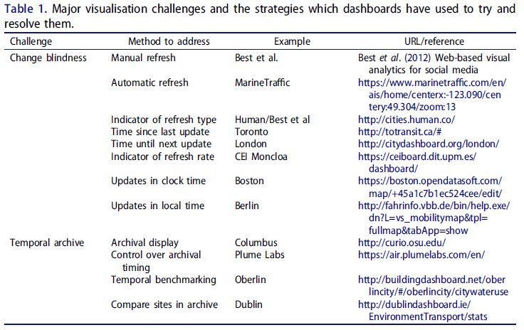
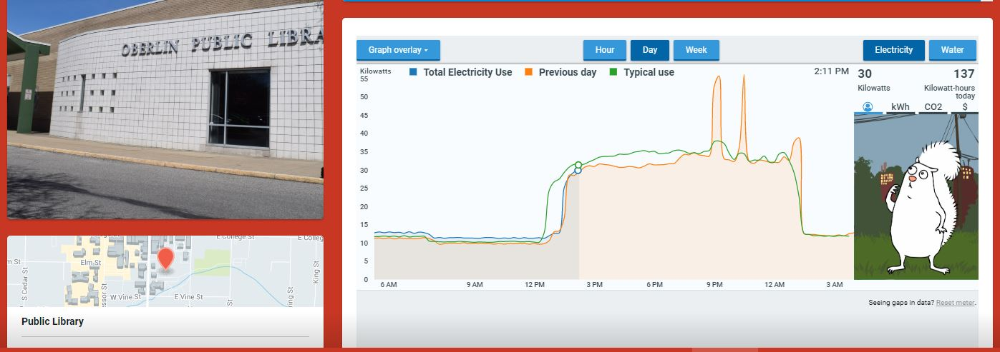
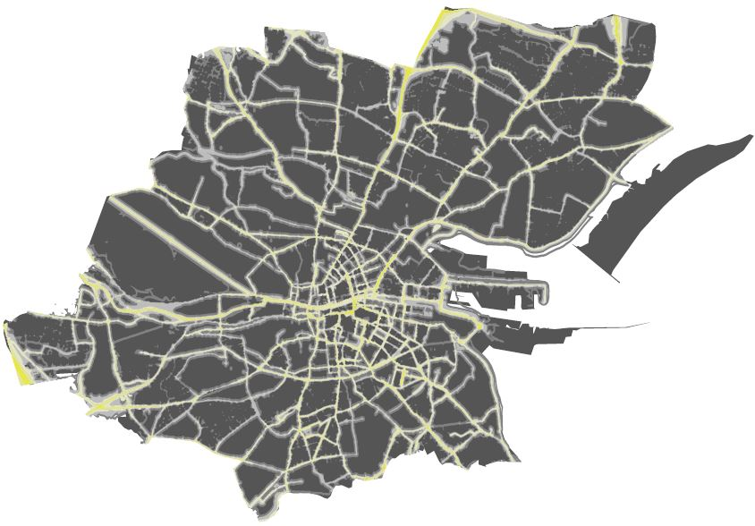
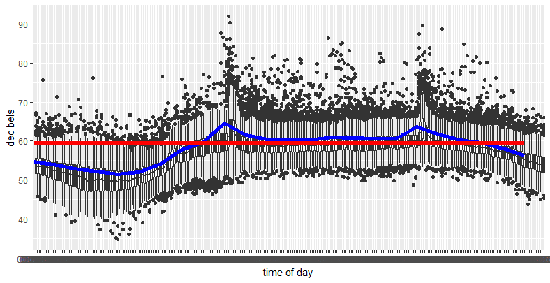
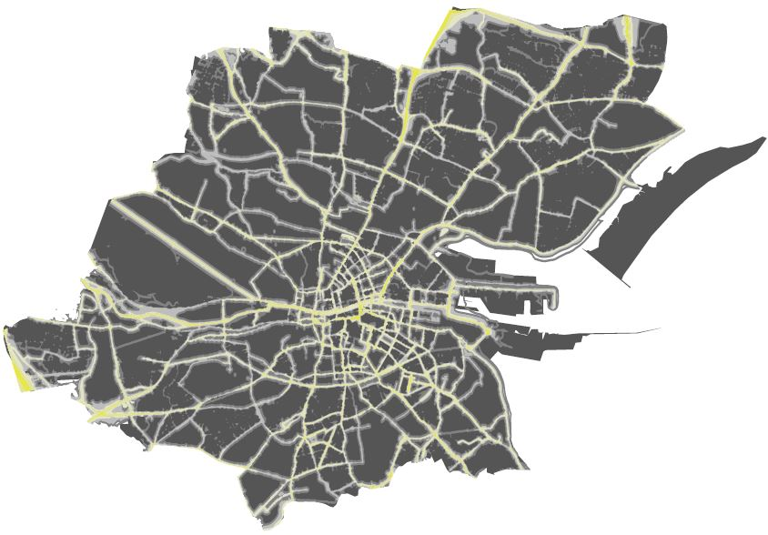
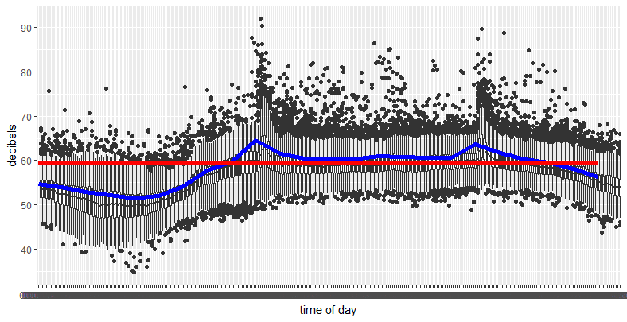
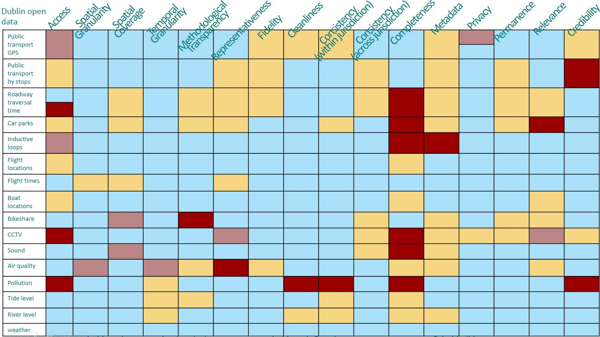

The Smart City Data-Scape
Opening Black Boxes with Urban Geoinformatics
Sam Stehle
National Centre for Geocomputation, Maynooth University, Maynooth Ireland
https://samstehle.github.io/Reveal/GeorgeMason/ResearchTalk.html
Building City Dashboards


Building City Dashboards
https://dublindashboard-beta.azurewebsites.net/
Bus Lateness
Real-Time and Archival Data Visualisation Techniques in City Dashboards
(Stehle and Kitchin 2019. IJGIS)


Pulse of the City
 



Data-Scape
